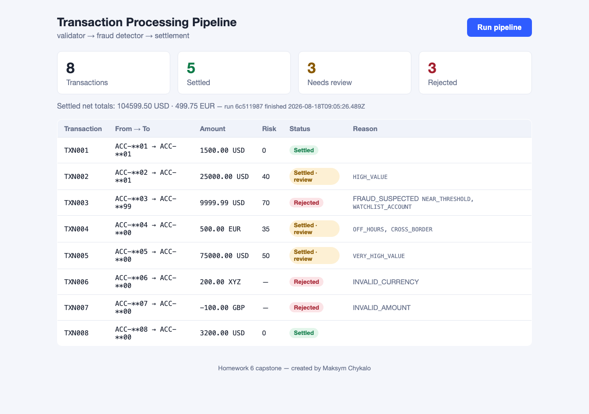

Stages communicate only through JSON message envelopes in shared directories
(shared/input → processing → output → results). Each stage claims the envelopes
addressed to it, works in processing/, and emits a fresh envelope — written atomically.
decimal.js Decimals — native floats are forbidden everywhereACC-1001 → ACC-**01; descriptions never logged| Check | Code |
|---|---|
| 7 required fields present | MISSING_FIELD |
| positive decimal, ≤ 2 dp | INVALID_AMOUNT |
| ISO 4217 allowlist | INVALID_CURRENCY |
| ISO 8601 timestamp | INVALID_TIMESTAMP |
| Type | Fee |
|---|---|
| wire_transfer | 0.10%, min 25.00 |
| transfer / refund / other | 0.25 / 0.00 / 0.50 |
| Rule | Condition | + |
|---|---|---|
| VERY_HIGH_VALUE | > 50,000 | 50 |
| HIGH_VALUE | 10,000 – 50,000 | 40 |
| NEAR_THRESHOLD | 9,000 – 9,999.99 (structuring) | 30 |
| WATCHLIST_ACCOUNT | destination watchlisted | 40 |
| OFF_HOURS | 00:00–04:59 UTC | 20 |
| CROSS_BORDER | country ≠ US | 15 |
≥ 70 rejected 30–69 review < 30 cleared
| Agent | Deliverable | Workflow artifact |
|---|---|---|
| 1 · Specification | specification.md — 5 sections, task-per-stage, testable outcome table |
spec-writer agent + /write-spec skill |
| 2 · Code generation | pipeline, orchestrator, React dashboard | context7 MCP: 3 documented queries (decimal.js, Express, Vite) in research-notes.md |
| 3 · Unit tests | 63 tests, ~93% line coverage | unit-test-writer agent + coverage-gate hook: push blocked < 80% |
| 4 · Documentation | README (author line), HOWTORUN, this deck | screenshots + evidence captured reproducibly into docs/ |
/run-pipeline — full run + result summary + rejection report/validate-transactions — validator dry-run table, no processingget_transaction_status, list_pipeline_results, pipeline://summary
XYZ).git/hooks/pre-pushgit push during development and blocked it until the suite landedFile global), sandboxed networking — all documented in HOWTORUN/research notes.